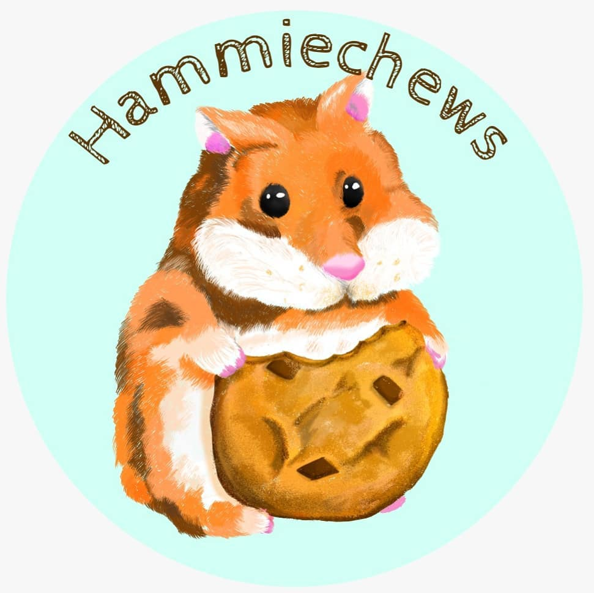
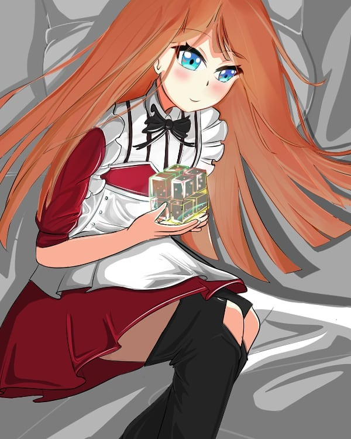
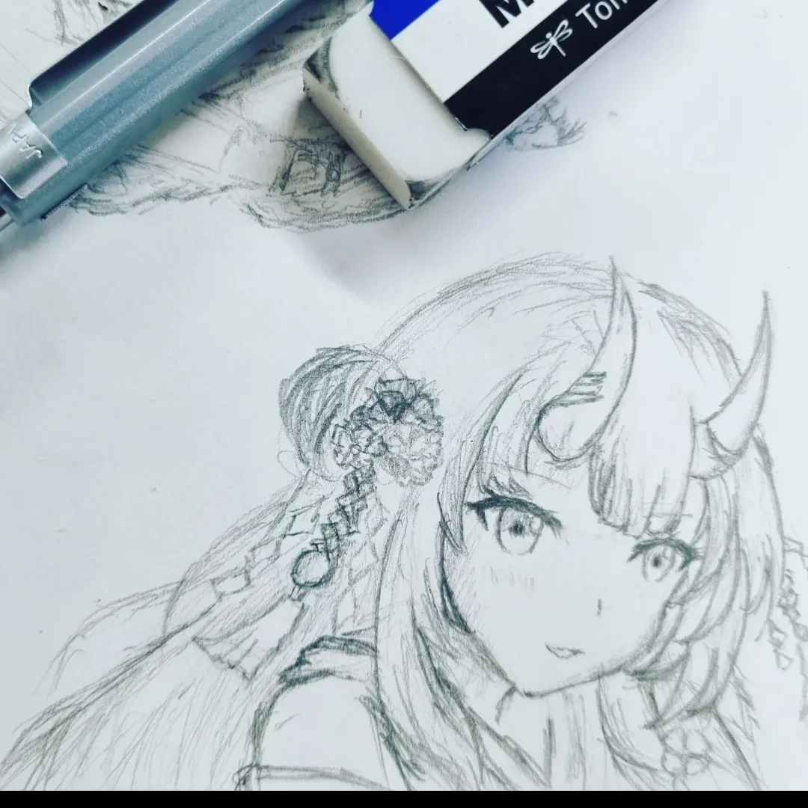
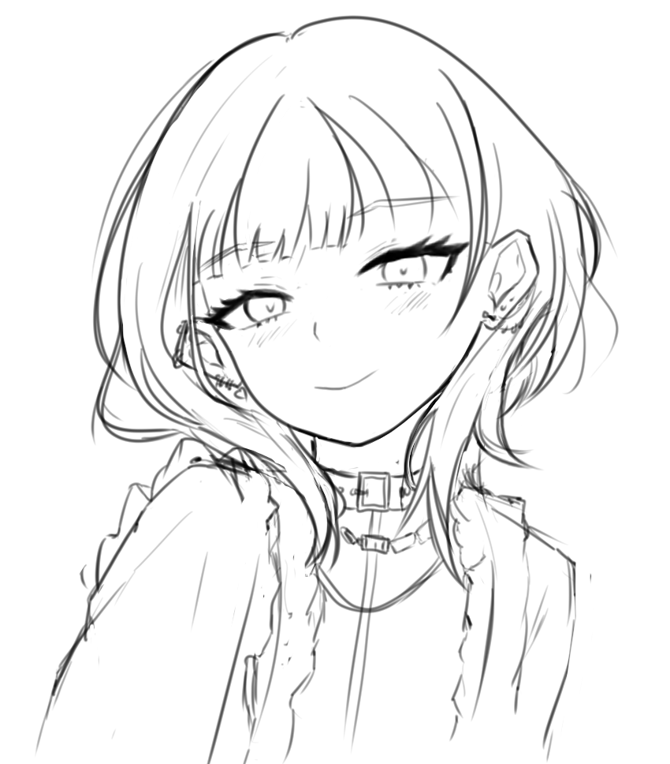
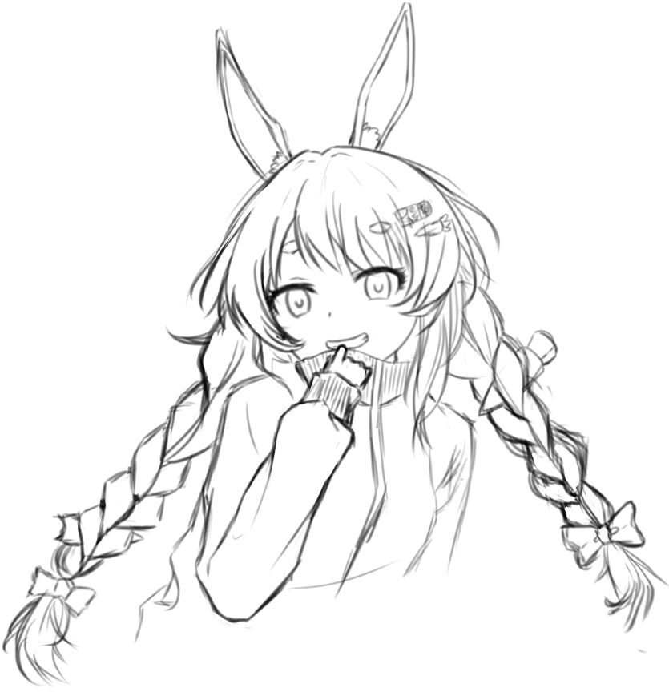
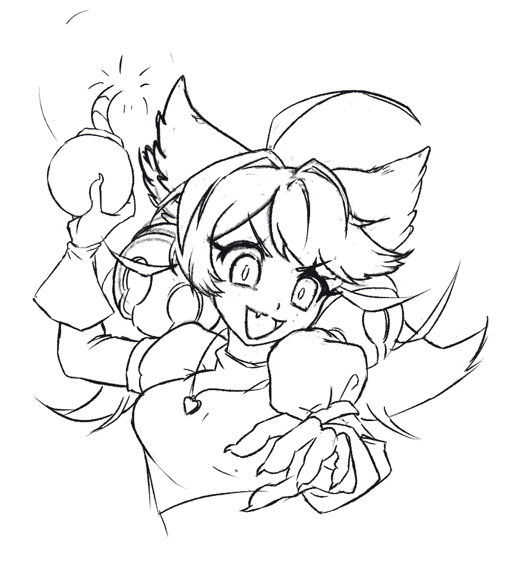
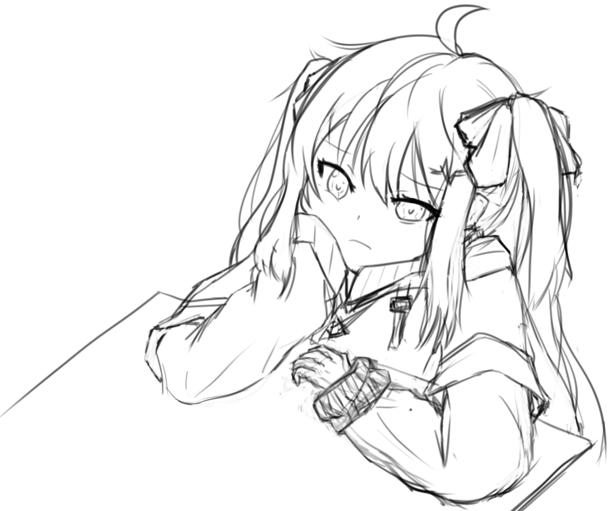
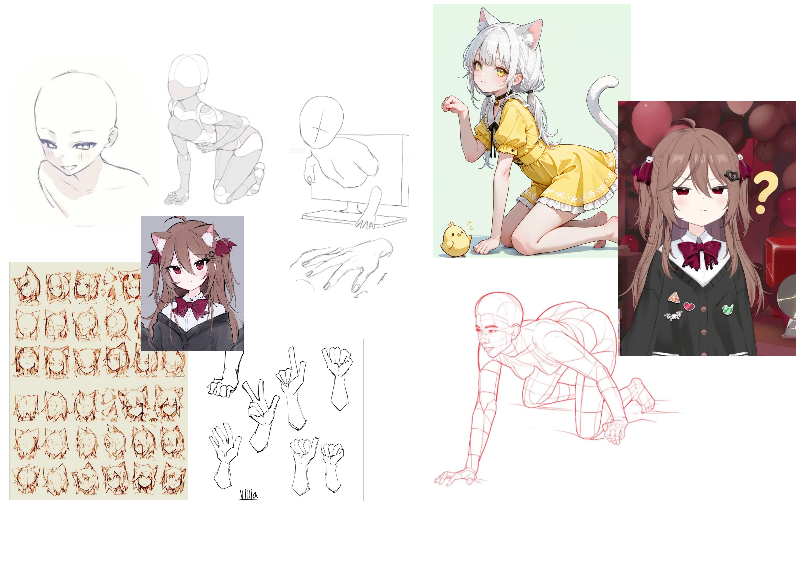
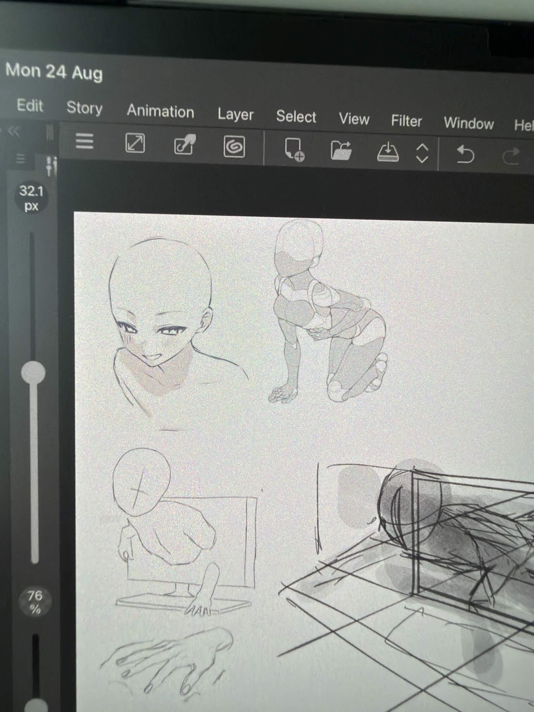
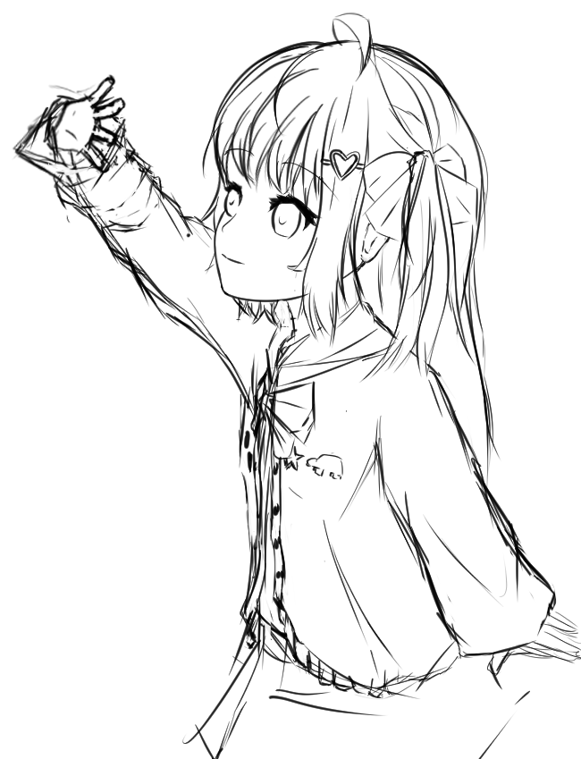

Jason Teo
Game Designer | Programmer

Meeting my Art Mentor!
Copy Studies? Original Art?
A little background: I've always been a creative person. I make videos in my free time, took Art for my O-levels back in secondary school, and kept dabbling in art even after choosing programming as my main medium. Part of me always wanted to level up my art, though. It would bring me closer to being a solo developer and one day making my very own game. Over the years I tried online courses here and there, but never really got anywhere.
Coming back from my OIP (Overseas Immersion Programme) in Spain, my passion for design was reignited, and I'd picked up the habit of sketching in my downtime there. So this time, I decided to go as far as I can. I wanted someone who could teach me the style I was after, and that's when I came across my mentor's listing!
She goes by Cathy and does character illustration and character design. The moment I saw her work, I knew this was the direction I wanted to take, so I sent in a request to learn. Knowing this will be a long and challenging journey, I decided to document it for anyone curious about how I'm approaching it, or who wants to do the same!



For reference, above are some pieces I made before this mentorship. But trust me, digital art is a whole other beast!
The first lesson covered Cathy's own learning journey, her approach to learning illustration, and how our sessions would run. I really appreciated it, as it set clear expectations and gave me a clear direction moving forward. For example, I knew you had to enjoy art in the first place, but I didn't realise I also needed a "role model" of sorts. Having one gives you a big goal: a style to aim for, recreate, and eventually build upon.
Everyone starts off by copying!
So how does one actually do that? As you might have guessed from the quote: copy studies! If the term is new to you, don't worry, it was to me too. I'd always assumed copying was bad and something I should never do. But as long as you're open about it being a study, it's a normal part of learning a new style. Just NEVER pass it off as an original piece. Common sense, people.
Why does this matter? Copying helps you work out how your favorite illustrations are made, but more importantly, it trains you to use references! Ever wondered why you can picture a piece in your head but can't get it down on paper? Most of us don't have the mental library to draw a stylised version of real-life things without references, and that library only comes from repetition. So until you can draw from memory and picture perspective well, use as many references as you need! At this stage, I did one copy study a day for 4 days.
Remember! Using references doesn't mean tracing or copying directly. You take the small parts or details you're unsure about and draw them to fit your overall piece!



Above are the copy studies I did!
After that, I got the green light to move on to an original piece. With one more reminder to use references, I was sent off to make my first one!




My other works from that week!
TL;DR: Do copy studies to learn your favorite artist's style, and use references, don't trace! Next week: Color Planning!